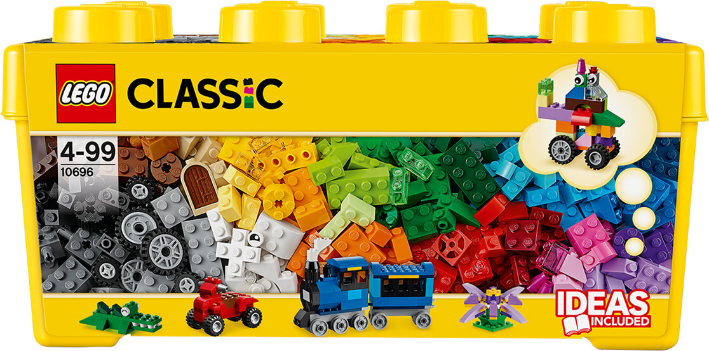
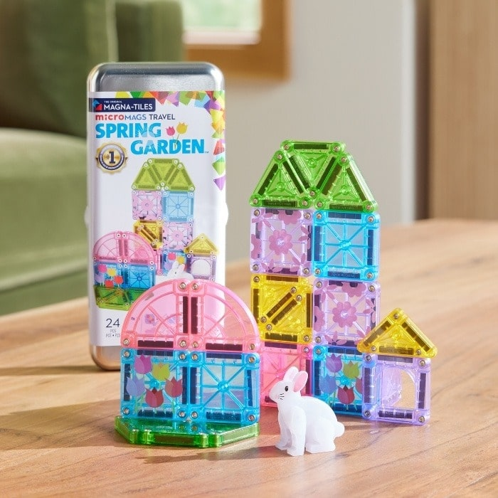
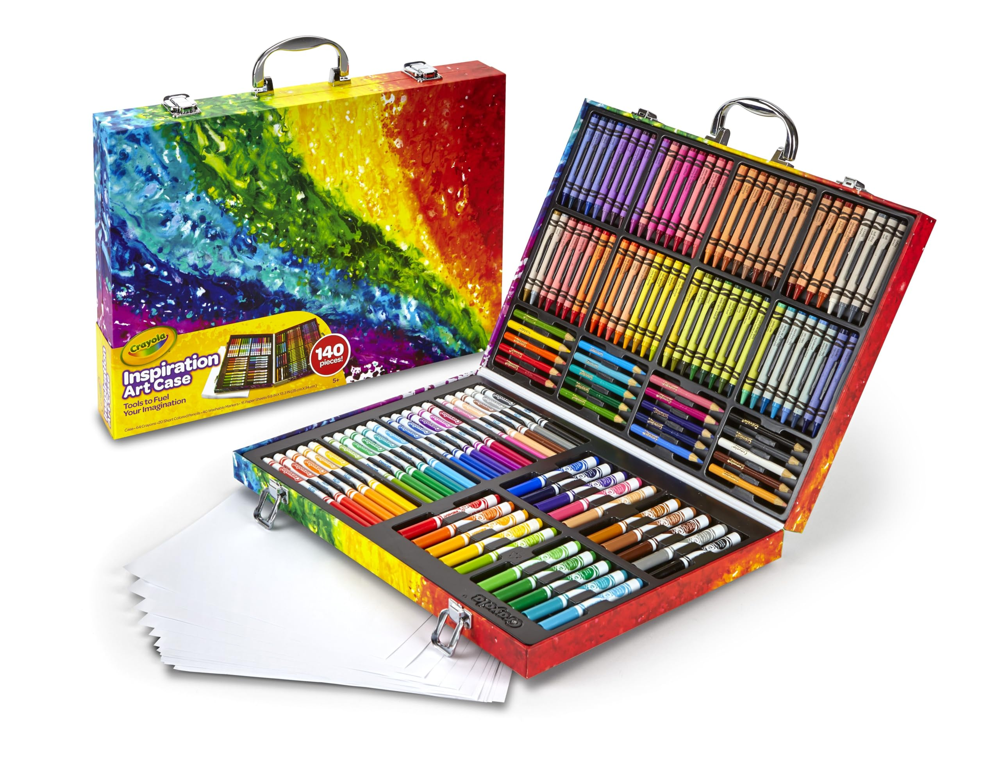
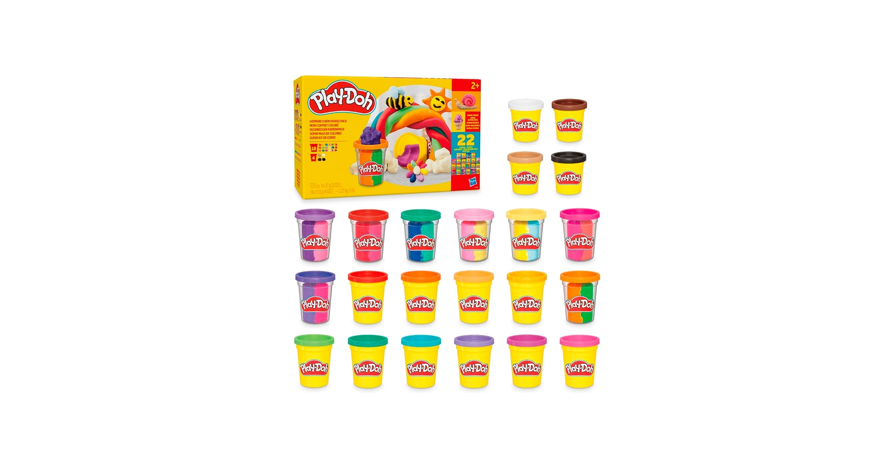
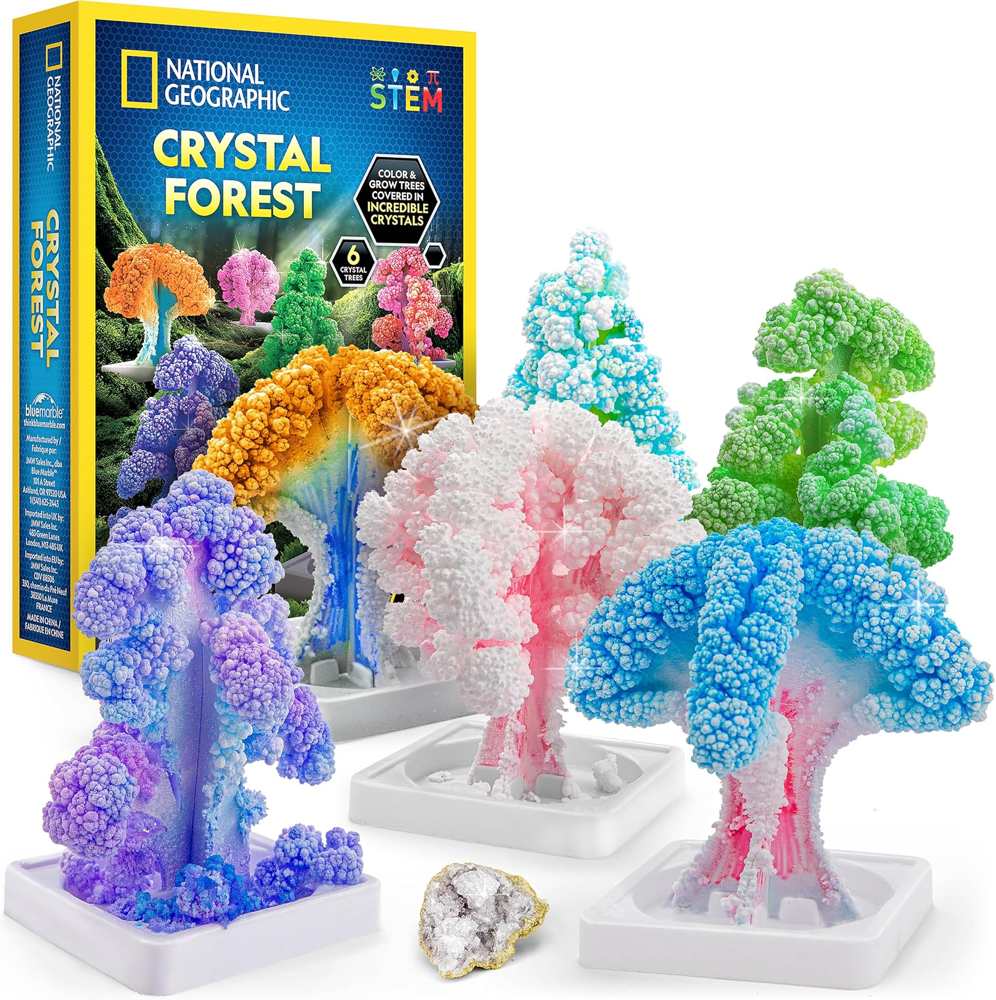
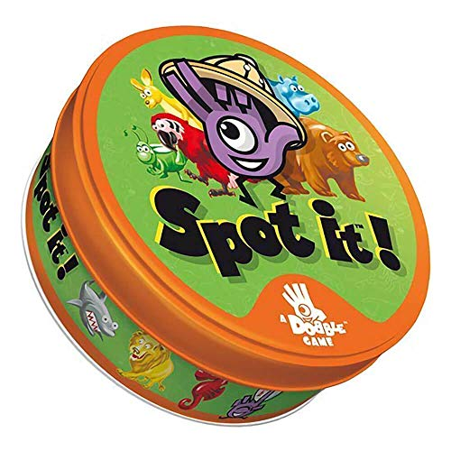
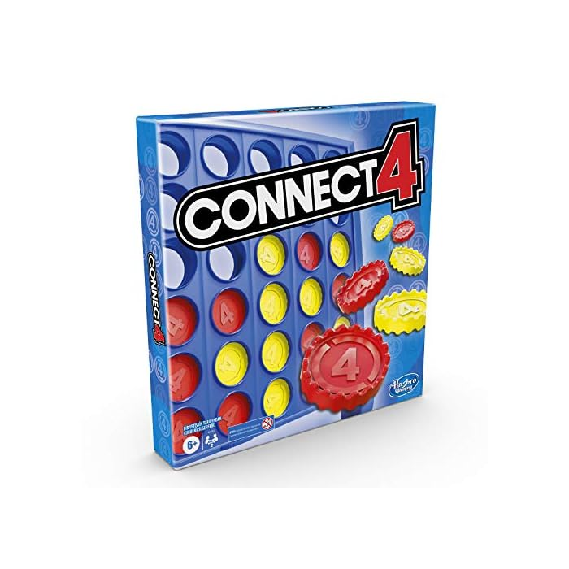
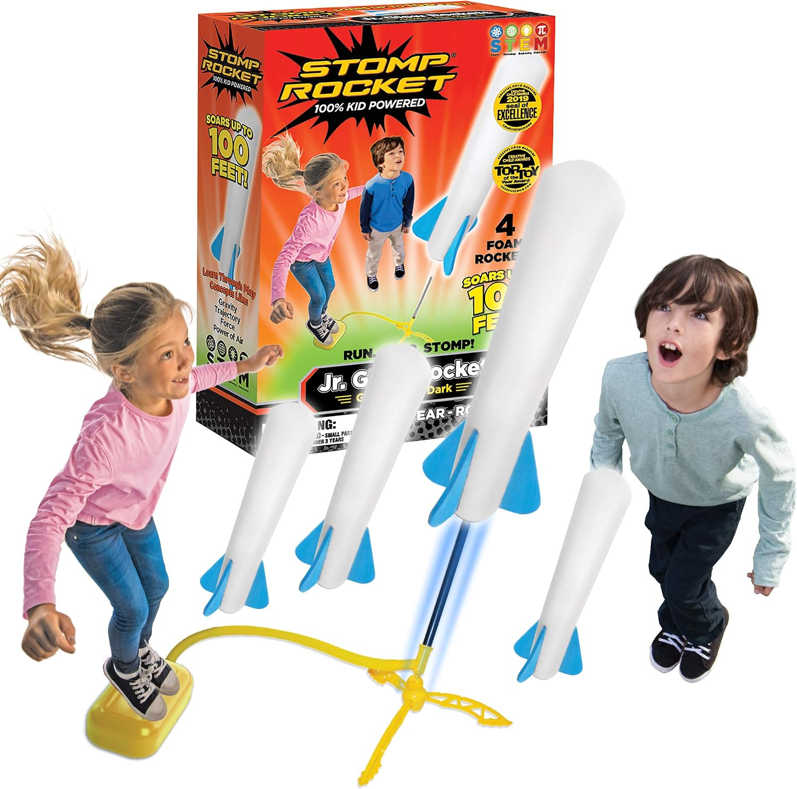
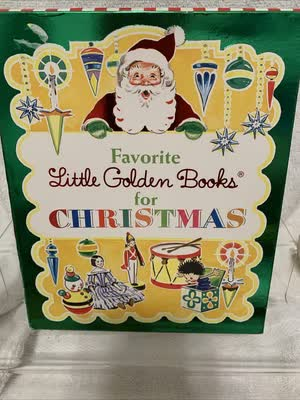

Best Gifts for Kids Under $25: 10 Picks They'll Actually Play With
Buying for kids is where gift budgets go to wobble: the toy aisle is engineered to make a $25 gift look inadequate, and the internet is full of no-name toys with glowing reviews and a two-week lifespan. This guide takes the opposite approach. Every pick below comes from a brand a gift-buyer already trusts — LEGO, MAGNA-TILES, Crayola, Play-Doh, National Geographic, Hasbro — and every pick sits in the under-$25 street-price range, needs no batteries or screens unless stated, and states the manufacturer's age guidance right on the card so you can match the gift to the kid.
A word on prices: we deliberately print none. Amazon prices on popular toys move daily in the run-up to Christmas, so a number printed in October would be a small lie by December. Each pick tells you what it is and who it suits; the button takes you to the live price. If a pick has drifted out of the range when you check, our stocking stuffers guide has ten more brand-name ideas at an even smaller budget, and the Black Friday watchlist tracks the bigger toys worth waiting until November 27 for.
How these picks were chosen
- Recognizable brands only. The counterfeit and no-name risk in kids' toys is the highest on Amazon. Every brand here is the real thing, sold through its normal listing.
- Play value past Christmas morning. Open-ended building, art supplies that get used up slowly, and games a family will still be playing in February — nothing here is a one-joke novelty.
- Age guidance on every pick. "Ages 4–7" matters more to a gift-buyer than any spec sheet, so it's on every card.
- No coupon-code friction. If a pick's price depends on clipping something or entering a code, it didn't make the list.
Building

1. LEGO Classic Medium Creative Brick Box (10696) — the can't-miss building gift
484 bricks in 35 colors with windows, eyes, 18 tires and wheel rims, and a green baseplate, all in the classic yellow storage box. Note this is the Medium box (10696) — the smaller sibling of the Large box on our Black Friday watchlist — which is exactly what puts it in this guide's price range. There are no instructions for one "right" build, just story-starter ideas (a train, a tiger, a windmill), and every brick mixes with whatever LEGO the kid already owns.
- Pros: open-ended play that grows with the kid; storage box included; compatible with every other LEGO set ever made.
- Cons: no minifigures in the box; 484 loose bricks will find your bare feet eventually — that is the LEGO tax.
Ages 4 and up · Best for: any kid, especially one starting or growing a LEGO collection.
Check current price
2. MAGNA-TILES microMAGS Spring Garden Travel Set (24 pieces) — magnetic building, sized for travel
The original magnetic building brand in its pocket format: 24 mini tiles with floral decorations, quarter-circle pieces and an exclusive bunny figure, packed in a metal tin that doubles as storage and a building base. The Spring Garden theme suits the season, the tin makes it the rare building toy that works at a restaurant table or on a plane tray, and every microMAGS piece is compatible with the full-size MAGNA-TILES sets.
- Pros: genuine MAGNA-TILES quality (riveted, lattice-reinforced tiles); travel tin included; builds fine-motor and spatial skills quietly.
- Cons: 24 mini pieces is a starter amount — serious builders will want a bigger set later; like all magnetic tiles, it carries the standard swallowed-magnet warning, so respect the age guidance.
Ages 3 and up · Best for: toddlers and preschoolers, travel, and a first magnetic-tile set.
Check current priceCreative & art

3. Crayola Inspiration Art Case (140 pieces) — the whole art cupboard in one case
64 crayons, 40 washable markers, 20 short colored pencils and 15 sheets of paper in a handled carrying case with locking latches. This is the gift that makes a kid feel like a professional: everything has a slot, the case travels from room to room, and the markers are washable, which is the detail the parent will thank you for. Safe and nontoxic, and big enough to feel like a "real" present under the tree.
- Pros: complete kit — nothing else to buy; washable markers; the case keeps 140 pieces corralled instead of scattered.
- Cons: the included paper runs out fast (any printer paper refills it); the case is cardboard-weight, so it rewards kids who latch it properly.
Ages 5 and up · Best for: young artists, and the gift that works for almost any elementary-school kid.
Check current price
4. Play-Doh 22 Pack Ultimate Color Variety — five pounds of the good stuff
18 four-ounce cans plus 4 two-ounce cans — including dual-color cans — for a total of 30 colors and five full pounds of Play-Doh. For toddlers and preschoolers this is the highest play-hours-per-dollar item on the list: squishing, rolling, cutting and color-mixing that builds fine-motor skills, splits happily between siblings, and doubles as the classroom gift teachers actually ask for. Made primarily from water, salt and flour (it does contain wheat).
- Pros: huge quantity for the price range; perfect for multiple kids to share; an Amazon Exclusive pack, so it's easy to reorder.
- Cons: cans dry out if lids are left off (an overnight-in-a-bag trick helps); colors will get mixed into one brown blob eventually — that's the process working.
Ages 2 and up · Best for: toddlers and preschoolers, playdates, and classroom gifts.
Check current priceSTEM & discovery

5. National Geographic Crystal Forest Kit — grow 6 crystal trees in 6 hours
Most science kits ask a kid to wait a week; this one pays off the same afternoon. Color the cardboard tree forms, add the crystal-growing compound, and six trees bloom with real crystals in about six hours. The kit includes a genuine geode specimen and National Geographic's learning guide, and it's an Amazon Exclusive from the most trusted name in kids' science. The finished forest is display-worthy, which is more than most experiment kits can claim.
- Pros: results in hours, not days; real geode specimen included; the outcome is a keepsake, not landfill.
- Cons: grown crystals are fragile — this is a look-don't-squeeze display; younger kids will need an adult's help with setup.
Ages 8 and up · Best for: curious kids, science-fair households, and gifts that aren't more plastic.
Check current priceFamily games

6. Spot It! Classic — the 15-minute game every family ends up owning
55 round cards in a travel tin, and one perfect mechanic: any two cards share exactly one matching symbol, and the first player to spot it and shout it wins the round. It plays 2–8 people in about 15 minutes, comes with five different game modes, and genuinely works across generations — a six-year-old's pattern-spotting speed humiliates adults regularly, which is precisely why kids request it. It also builds focus and visual-perception skills without ever feeling like homework.
- Pros: learnable in one minute; up to 8 players; the tin makes it a true travel game.
- Cons: it's fast and loud by design; the cards are standard cardstock, so drinks and game night don't mix.
Ages 6 and up · 2–8 players · Best for: family game night, travel, and stocking-adjacent gifting (it's tiny).
Check current price
7. Connect 4 Classic Grid — the two-player strategy starter
The original: a vertical grid, 21 red discs, 21 yellow discs, and the race to line up four while blocking the other side. Connect 4 is the first real strategy game most kids learn — simple enough for a six-year-old, honest enough that adults can't coast — and Hasbro's classic-grid version remains the #1-selling board game format on Amazon for a reason. Games run five minutes, so "best of five" settles every argument.
- Pros: teaches genuine strategy and planning ahead; quick games, endless rematches; zero setup beyond clicking the grid together.
- Cons: strictly 2 players — a third sibling needs Spot It! above; the discs will migrate under furniture, as discs do.
Ages 6 and up · 2 players · Best for: siblings, grandparents-vs-grandkids, and a first strategy game.
Check current priceActive & outdoor

8. Stomp Rocket Jr. Glow — 100% kid-powered, up to 100 feet
The counterweight to every screen on the list: four soft foam rockets, a launch stand and a stomp pad. A kid runs, jumps on the pad, and the rocket soars up to 100 feet — these ones glow in the dark, which extends play past sunset in the summer and makes winter's early dark less of a shutdown. No batteries, no assembly beyond clicking the stand together, and it's a genuine STEM toy in disguise (gravity, trajectory, force and air pressure are printed right on the box because kids ask about all four within ten minutes).
- Pros: burns real energy; multi-player by nature — one stomps, everyone chases; refill rockets are cheap and interchangeable.
- Cons: needs outdoor space (a yard or park); foam rockets eventually split with heavy use — hence the refills.
Ages 3 and up · Best for: high-energy kids, backyard gifts, and breaking the tablet trance.
Check current pricePlush & books

9. Squishmallows Original 8" Grogu Plush — the licensed one, not a knockoff
Plush is the highest counterfeit-risk category on Amazon, so this pick was verified carefully: this is the official Jazwares Squishmallows 8-inch Grogu — the marshmallow-soft "Little" size — sold under the Squishmallows parent listing. Grogu is the rare character who lands with a five-year-old and a fifteen-year-old equally, the 8-inch size is the collectible standard, and Squishmallows' ultrasoft fill is genuinely a cut above generic plush.
- Pros: official Jazwares product (check the tag — fakes flood this category); the 8-inch size is backpack- and bed-friendly; Star Wars appeal spans a huge age range.
- Cons: one character only, obviously; Squishmallows are collectible, so this gift may start something.
Ages 3 and up · Best for: Star Wars kids, plush collectors, and the soft gift that always lands.
Check current price
10. Favorite Little Golden Books for Christmas (5-Book Boxed Set) — five classics, one box
The grandparent gift, perfected: five hardcover Little Golden Books in a gift box — The Animals' Christmas Eve, The Christmas Story, The Little Christmas Elf, The Night Before Christmas and The Poky Little Puppy's First Christmas. Little Golden Books have been the default first-library since 1942 for a reason: sturdy, short enough for a bedtime negotiation, and illustrated in the classic style. Give it in early December and it gets read all season instead of once.
- Pros: five real hardcovers in gift-ready packaging; stories short enough for ages 2–5 attention spans; ships flat and easy.
- Cons: it is Christmas-specific (that's the point, but it won't suit every family); 24 pages per book means heavy rotation readers will finish the set quickly.
Ages 2–5 · Best for: first libraries, grandparent gifts, and a December-long tradition starter.
Check current priceShopping for the whole family?
Kids are one line on the list. The rest of the family's guides are built the same way — recognizable brands, honest trade-offs, no printed prices: gifts under $25 for men, gifts under $25 for women, self-care gifts under $30, and stocking stuffers under $15 for the small stuff. And if any pick above is a Black Friday candidate for you, the Black Friday watchlist explains which categories are worth holding out for until November 27.
Quick answers
Are all of these gifts really under $25?
Every pick was chosen because its usual street price sits in the under-$25 range. Amazon prices move daily, though — especially in November and December — which is why this guide prints no prices. Tap any pick to see its current price before you buy.
What is the best gift here for a kid I don't know well?
The LEGO Classic Medium Creative Brick Box (10696). It is open-ended, ages 4 and up, works for boys and girls equally, and mixes with any LEGO a kid already owns — there is almost no way to get it wrong. For a toddler, the Play-Doh 22-pack is the equivalent safe bet.
What ages do these gifts cover?
From age 2 (Play-Doh, Little Golden Books) through the 8–12 range (the National Geographic crystal kit). Every pick on the list states the manufacturer's recommended age so you can match the gift to the kid instead of guessing.
When should I order kids' gifts for Christmas?
Earlier than feels necessary. The popular brand-name toys on this list are exactly the ones that sell through in December, and shipping cutoffs creep up every year. Buying in late October or November also means you shop the Black Friday price drops instead of the mid-December panic prices.